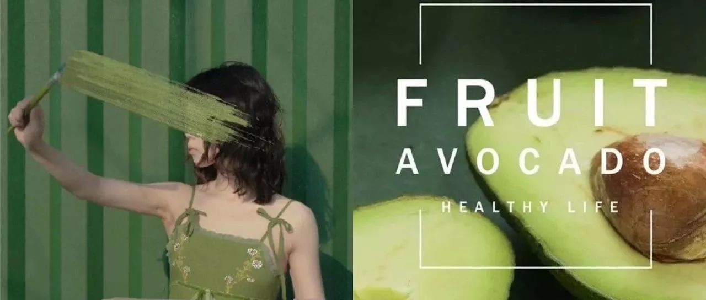
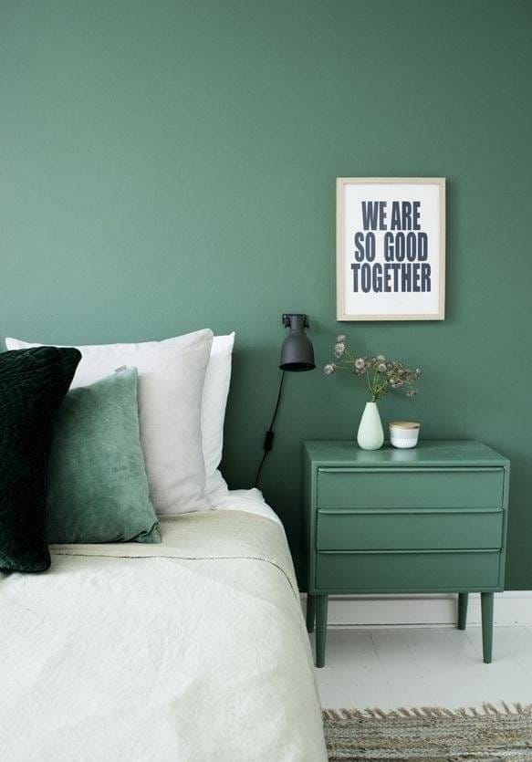
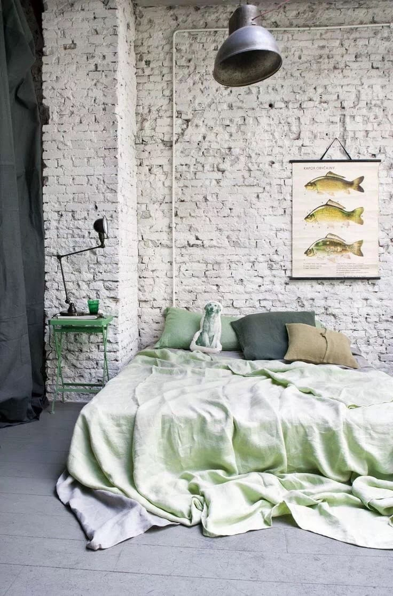
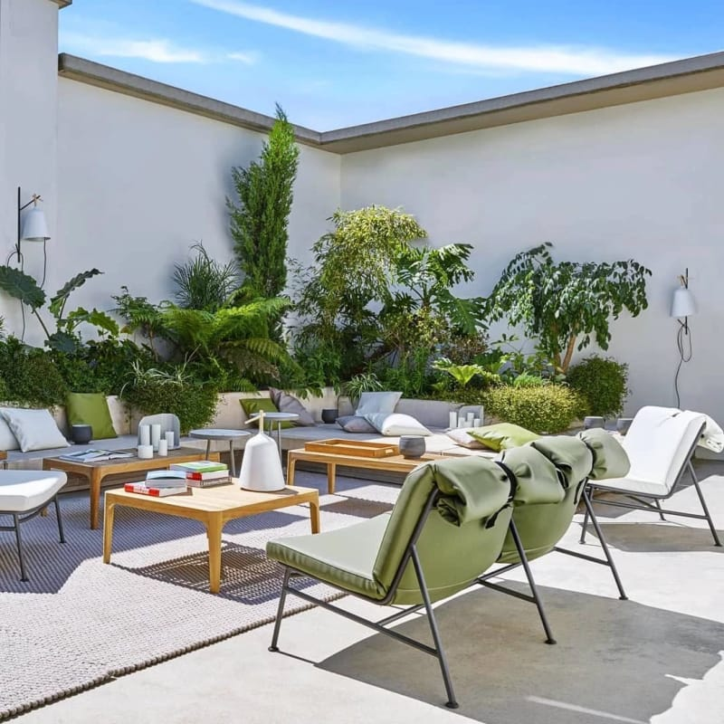
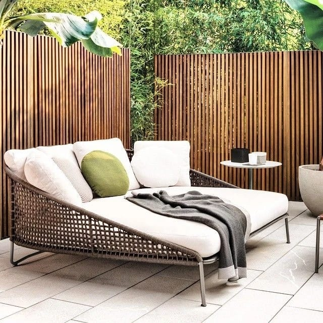
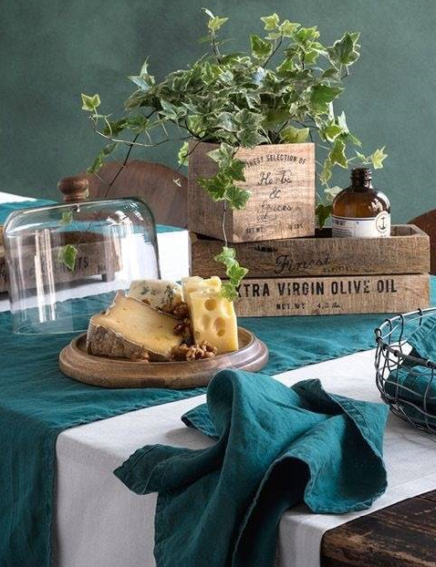
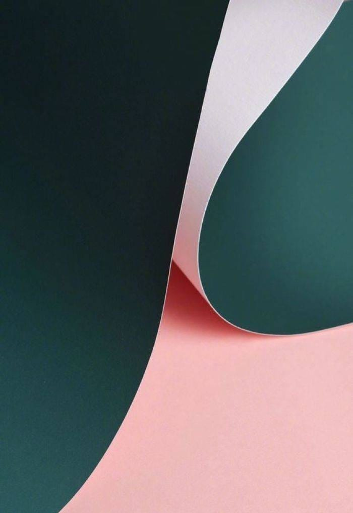
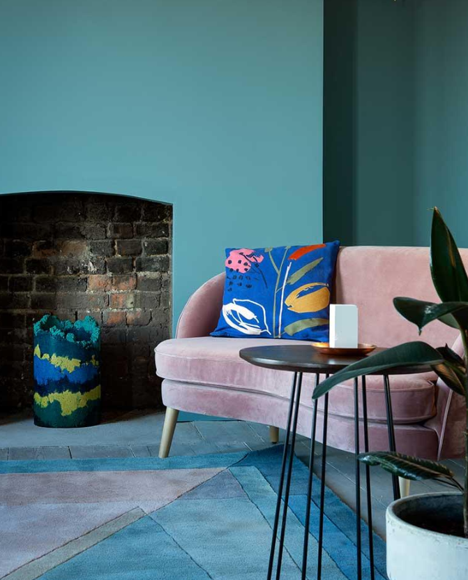
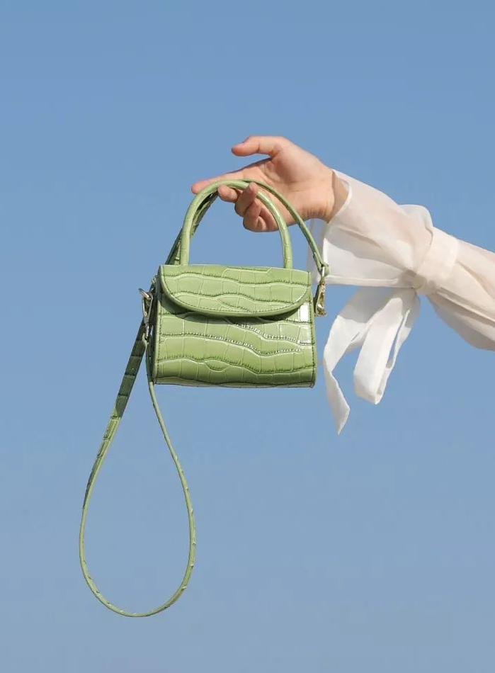
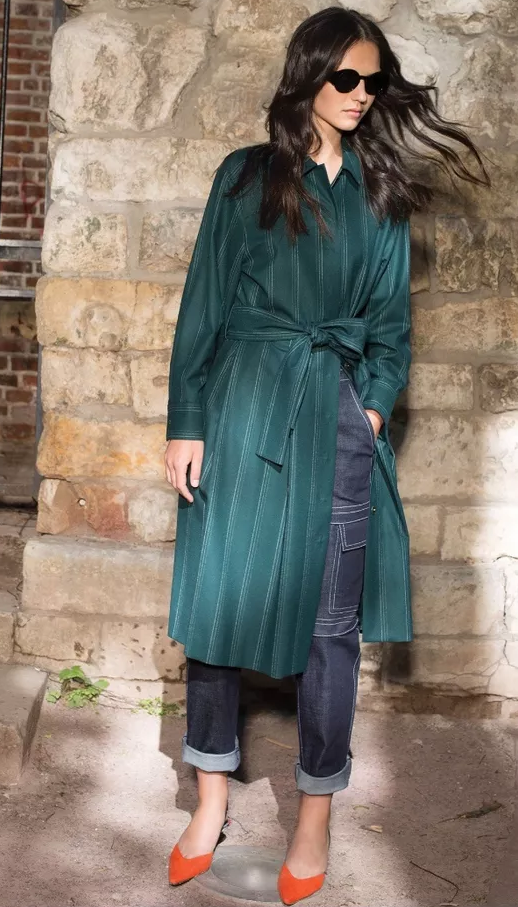

配色 | 牛油果色在家居、时装中的搭配应用

一、家居应用。
- 大面积色块：可以应用在一整面墙，比如床头的墙面，床上用品可以做颜色呼应。


- 小面积色块：可以应用在桌椅等家具上。


- 装饰：应用画框、绿植等。

- 颜色搭配：绿与粉色搭配将会有很不错的效果，清新又复古。


二、时装应用
电影《赎罪》里面女主的两身绿色服饰让人印象深刻。
- 连衣裙
连衣裙可选择的材质有很多，像电影中的真丝材质就很不错，泛着微微的光泽，在夜色里能衬得人极有韵味，除此之外，还可以大胆尝试其他材质，这条方领的针织绿裙，刚好露出最好看的颈肩线条，绿色还显得皮肤白皙又健康。
- 西装、外套
这件西装配上黄色与红色的细条纹，透出一股英姿飒爽的气质。
- 包包
浅绿色的小包在春夏季清新又可爱

- 色彩搭配
绿与橘，大面积的绿色与小面积的橘色搭配，深绿显得优雅又酷，橘色点亮了一身的装扮

发布于:
2021/4/13